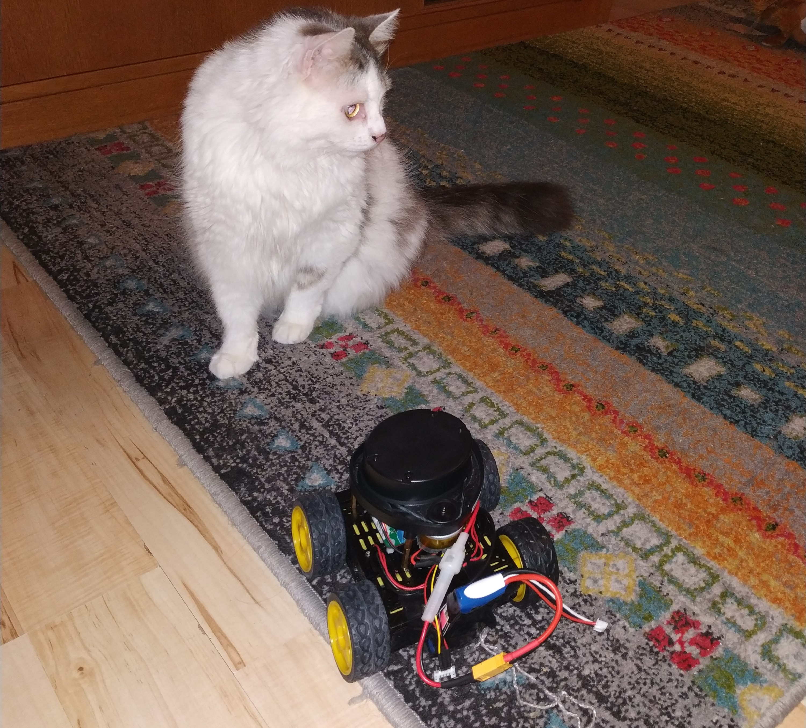

I bought my Neato lidar very cheaply from Ebay. I did get it to run and talk to an stm32f4 under ChibiOs. But it does seem to not be in top working order. Good enough to play with though.
There are several blogs and forum posts on the web that discuss the Neato lidar in one way or another and I pieced together the information needed to talk to the lidar from such sources. At this time I cannot remember exactly which source gave me what insight and I am also uncertain that I managed to find all the sources that helped me. So here is a list other sites that talk about the Neato lidar in a hobbyist setting:
I'm sure there are many more and if you are the author of a page that I missed and you can tell from the contents here that I am influenced by your work, please point it out and I will add this acknowledgment.
Below is a picture of my little robot (and cat) equipped with the neato. The robot controller used is my hobby project the FMRC. If this seems fun there are a bunch of videos on youtube on the development and redesigns of the FMRC. FMRC YouTube videos

The FMRC (Four Motor Robot Controller) can independently control 4 different DC motors using 2 DRV8833 or on the newer version DRV8847 chips. It has two MCUs, an stm32f4 and an NRF52. When it comes to connectivity it has USB, UART, Bluetooth and a CAN Transceiver.
To interface with the Neato lidar, the UART connector is used for data and one of the motor drive channels is used to control the RPM of the motor that spins the lidar. The never version of the PCB has two additional motor drive outputs that are not full H-Bridges but rather just a mosfet that can be pwmed, on this version all 4 motor drive channels would remain free even when equipped with lidar.
The code consists of the following parts:
Let's begin with some code related to the uart connection. Playembedded has a good text about about the serial driver in ChibiOS, this is the driver that is used here.
The pins used are PC10 and PC11 for TX and RX. One alternative function of these pins (see STM32F405 Datasheet) is USART3 and since USART3 is used the ChibiOS serial driver to use is SD3.
#define LIDAR_UART_PORT GPIOC
#define LIDAR_UART_TX 10
#define LIDAR_UART_RX 11
#define LIDAR_SERIAL_DRIVER SD3
Then a serial configuration object is created.
static SerialConfig serial_cfg = {
115200,
0,
USART_CR2_STOP1_BITS,
0
};
The rest of the setup of the serial communication takes place in the initialization function.
void neato_lidar_init(void) {
palSetPadMode(GPIOC, 10, PAL_MODE_ALTERNATE(7));
palSetPadMode(GPIOC, 11, PAL_MODE_ALTERNATE(7));
sdStart(&SD3, &serial_cfg);
if (!calibrate_lidar_motor()) {
return;
}
(void)chThdCreateStatic(neatoLidarThreadArea,
sizeof(neatoLidarThreadArea),
NORMALPRIO,
neatoLidarThread, NULL);
}
The neato_lidar_init function configures PC10 and 11 to alternative mode 7. In the stm32f4 datasheet you can find this information in the section about Alternate Function Mapping. It then starts the serial driver.
After setting up the uart, the lidar-spinning motor is calibrated. The lidar reports its RPM in the data it outputs. So what the calibration function is doing is trying to find the PWM duty cycle that makes the lidar spin at 300RPM. I am not sure that 300RPM is really the ideal. I found this number by experiments. It seemed to me that at 300RPM it returned the highest number of valid distance readings. This may of course be something specific to my used and not 100% OK lidar.
Following the calibration, the neatoLidarThread is set up. We will look at this code after first looking at the calibration routine. There are a few things in the calibration that have not yet been introduced. But just assume that there is a way to read the current RPM out from the lidar, the details of that are shown later.
The calibration routine performs a so-called binary search over the PWM duty cycles and tries to lock down on a duty cycle that results in 300RPM.
It does this by:
duty = 5000).low to high to 0% and 100%.duty.int calibrate_lidar_motor() {
neato_lidar_packet_t p;
unsigned int avg_rpm;
bool done = false;
int duty = 5000;
int low = 0;
int high = 10000;
while (!done) {
pwmEnableChannel(&PWMD2, 3 , PWM_PERCENTAGE_TO_WIDTH(&PWMD2,duty));
chThdSleepMilliseconds(500);
avg_rpm = 0;
for (int i = 0; i < 200; i ++ ) {
if (read_packet(&p)) {
avg_rpm += p.rpm;
}
}
if ( abs(high - low) < 5) {
done = true;
} else if ( avg_rpm > 60000 ) {
high = duty;
duty = low + ((duty - low) / 2);
} else if ( avg_rpm < 60000) {
low = duty;
duty = high - ((high - duty) / 2);
}
}
motor_duty = duty;
pwmEnableChannel(&PWMD2, 3 , PWM_PERCENTAGE_TO_WIDTH(&PWMD2,motor_duty));
return 1;
}
The motor_duty is a global variable that is later accessed by the lidar-thread and fine tuned a little bit during operation.
static int motor_duty = 5000;
Each data-packet that is sent from the lidar over the uart contains four distance readings. 90 packets are sent from the lidar during one rotation giving 360 distance readings for a full revolution. The struct below represents the data sent in each package. It contains:
0 - 89. Encoded as 0xA0 to 0xF9Each package is 22bytes and the checksum ok indicator is calculated in the function called parse_packet that takes the raw data bytes and fills in the fields of this struct:
typedef struct {
uint8_t index;
float rpm;
uint16_t dist[4];
bool valid[4];
bool warn[4];
uint16_t signal[4];
bool checksum_ok;
} neato_lidar_packet_t;
The parse_packet function starts out by computing the checksum over the first 20 bytes of the package. This checksum is them compared to the checksum already stored in the last 2 bytes of the package. After checking the checksum and storing the result of that in the struct, all the data fields are extracted from the bytes.
static int parse_packet(uint8_t *bytes, neato_lidar_packet_t *p) {
uint16_t chk = checksum(bytes);
uint16_t packet_chk = bytes[21] << 8;
packet_chk += bytes[20];
p->checksum_ok = chk == packet_chk ? true : false;
p->index = bytes[1] - 0xA0;
p->rpm = ((float)((uint16_t)bytes[2] + (bytes[3] << 8))) / 64.0f;
p->valid[0] = !(bytes[5] & 0x80);
p->warn[0] = bytes[5] & 0x40;
p->valid[1] = !(bytes[9] & 0x80);
p->warn[1] = bytes[9] & 0x40;
p->valid[2] = !(bytes[13] & 0x80);
p->warn[2] = bytes[13] & 0x40;
p->valid[3] = !(bytes[17] & 0x80);
p->warn[3] = bytes[17] & 0x40;
p->signal[0] = bytes[6] + (bytes[7] << 8);
p->signal[1] = bytes[10] + (bytes[11] << 8);
p->signal[2] = bytes[14] + (bytes[15] << 8);
p->signal[3] = bytes[18] + (bytes[19] << 8);
p->dist[0] = bytes[4] + ((bytes[5] & 0x1f) << 8);
p->dist[1] = bytes[8] + ((bytes[9] & 0x1f) << 8);
p->dist[2] = bytes[12] + ((bytes[13] & 0x1f) << 8);
p->dist[3] = bytes[16] + ((bytes[17] & 0x1f) << 8);
return 1; // An alternative would be to return 0 if checksum fails.
}
I show the checksum function below. I cannot currently find the source of where I found this algorithm. It may be that it is a very standard checksumming method. If you recognize this, please remind me where it comes from. The function treats adjacent bytes as a 16bit word and iteratively adds these up into a 32bit variable. In the end, to combine the high and low 16 bits of this results into a 16 bit final result.
static uint16_t checksum(uint8_t *data)
{
uint32_t chk32=0;
uint16_t word;
int i;
for(i=0;i<10;++i)
{
word=data[2*i] + (data[2*i+1] << 8);
chk32 = (chk32 << 1) + word;
}
uint32_t checksum=(chk32 & 0x7FFF) + (chk32 >> 15);
return checksum & 0x7FFF;
}
To interface these neato lidar specific functions above with ChibiOS, there is a read_packet function. This function tries to find the start of packet indicator 0xFA and then reads it and an additional 21 bytes into a buffer. This is done by polling the serial link (uart) until the start indicator is found. All the reading from the serial link is done with a timeout that aborts the procedure if no data arrives for a long time, which may indicate a problem with the hardware.
Once 22 bytes have been read they are passed to the parse_packet function.
static int read_packet(neato_lidar_packet_t *p) {
uint8_t bytes[22];
int num_read = 0;
uint8_t c;
int i = 0;
// Polling serial link for start of packet.
while (true) {
num_read = sdReadTimeout(&LIDAR_SERIAL_DRIVER, &c,1, 100);
if (num_read == 0) return 0;
if (c == 0xFA) {
bytes[0] = c;
break;
}
}
for (i = 1; i < 22; i ++) {
num_read = sdReadTimeout(&LIDAR_SERIAL_DRIVER, &c,1, 100);
if (num_read == 0) return 0;
bytes[i] = c;
}
return parse_packet(bytes, p);
}
The ChibiOS thread that continuously reads lidar packets is shown below. It fills in a distance array of integers, where a -1 value indicates that the reading at that angle was invalid.
The thread loops forever and in each iteration reads a packet, checks if valid and fills in the distance array.
It also checks the current RPM in each iteration and makes small adjustments to the duty-cycle if the RPM has for some reason drifted away from 300.
static int distance[360];
static THD_WORKING_AREA(neatoLidarThreadArea, 2048);
static THD_FUNCTION(neatoLidarThread, arg) {
(void) arg;
while (true) {
neato_lidar_packet_t p;
if (read_packet(&p)) {
int i = p.index * 4;
for (int j = 0; j < 4; j ++) {
if (p.valid[j]) {
distance[i+j] = p.dist[j];
} else {
distance[i+j] = -1;
}
}
// Adds a bit of correction to the duty cycle based on current RPM
// Maybe should filter this for "influence over time" in some way.
if (p.rpm < 300) {
motor_duty ++;
if (motor_duty > 10000) motor_duty = 10000;
pwmEnableChannel(&PWMD2, 3 , PWM_PERCENTAGE_TO_WIDTH(&PWMD2,motor_duty));
} else if (p.rpm > 315) {
motor_duty --;
if (motor_duty < 0) motor_duty = 0;
pwmEnableChannel(&PWMD2, 3 , PWM_PERCENTAGE_TO_WIDTH(&PWMD2,motor_duty));
}
} else {
//chprintf((BaseSequentialStream *)&SDU1, "TIMEOUT!\n\r");
}
chThdSleepMilliseconds(1);
}
}
The interface used by the rest of the application is neato_lidar_distance that takes and index 0 - 359 and returns that index from the distance array. I am not actually sure that the distance array needs to be protected by a mutex or not. On one hand I imagine that reading and writing a 32Bit value will be an atomic operation on the platform, but then I did not look into that!
int neato_lidar_distance(int ix) {
return distance[ix];
}
I hope this information is of value to anyone. It is all based on bits of information that I pieced together from other sources. Maybe the full disclosure of source code and the ChibiOS integration all in one place can be a good thing? Anyway, if you are working on something related or if you recognize that I am deriving my code from yours and want acknowledgment please let me know.
© Copyright 2020 Bo Joel Svensson
This page was generated using Pandoc.